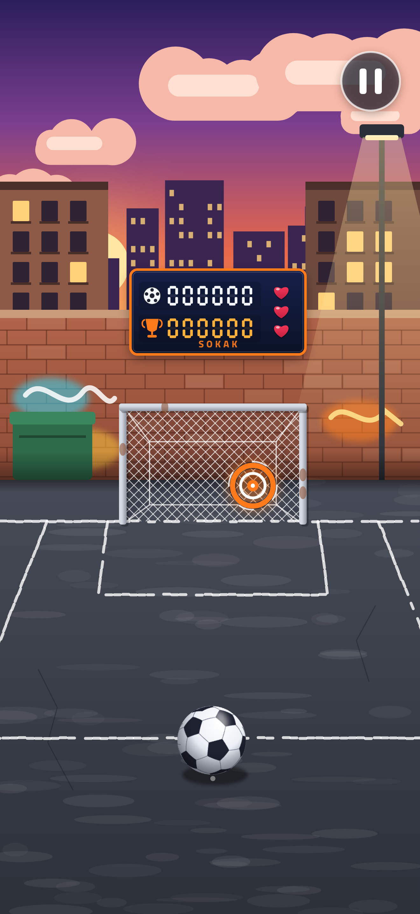
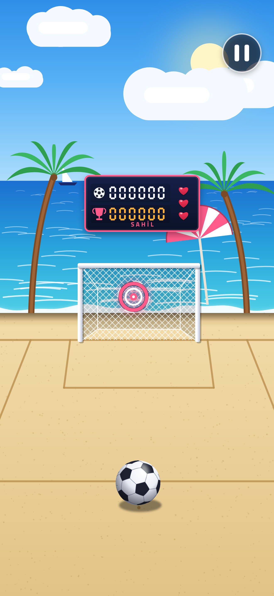
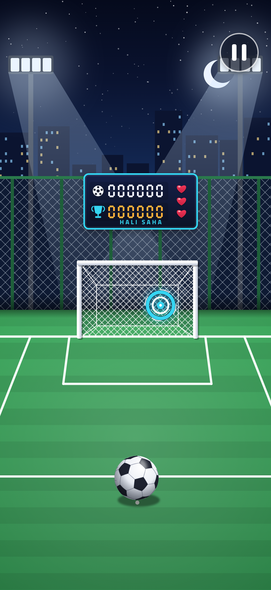
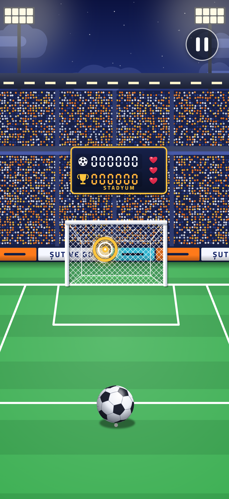

Yönünü seç.
Topun üzerinden kaleye doğru kaydır. Hareketinin hızı ve uzunluğu şutun gücünü belirler.
Parmağını kaydır. Falsonu ver. Hedefi bul.
Sokaktan stadyuma uzanan yolculukta, bir sonraki rekor senin elinde.
App Store yayın hazırlığı sürüyor.

Topun üzerinden kaleye doğru kaydır. Hareketinin hızı ve uzunluğu şutun gücünü belirler.
Parmağınla bir yay çiz. Topa falso ver, hareketli kalecilerin yanından hedefe ulaş.
Beş ardışık isabetle Kral Modu’nu aç. On saniye boyunca altın topla iki kat puan kazan.
İlk şut. İlk heyecan. / 0+

Dalgalar eşliğinde. / 300+

Işıklar senin için. / 700+

Tribünler hazır. / 1200+
Bir sorun mu yaşadın? Cihaz modelini, iOS sürümünü ve sorunu nasıl tekrarlayabildiğini bize yaz.
Destek ekibine yazÜyelik, skor senkronizasyonu ve sıralama için internet gerekir. Ses ve titreşim tercihlerin cihazında saklanır.
Topun üzerinden yukarı doğru kaydır. Daha hızlı hareket daha güçlü şut verir. Eğri bir hareket topa falso katar. Hedef halkasına isabet ettirerek puan kazanırsın.
Rekorunu korumak ve sıralamaya katılmak için hesap oluşturulur. Reklam, abonelik ve uygulama içi satın alma bulunmaz.
Evet. Aynı hesapla giriş yaptığında onaylanan skorların ve kullanıcı adın hesabına bağlı kalır.
Sağ üstteki duraklatma düğmesine dokun. Açılan menüde ses ve titreşimi ayrı ayrı değiştirebilirsin.
Swipe upward to shoot; curve your swipe to bend the ball. Compete online across four locations. For help, email bilgi@globalmedia.com.tr with your device model and iOS version.